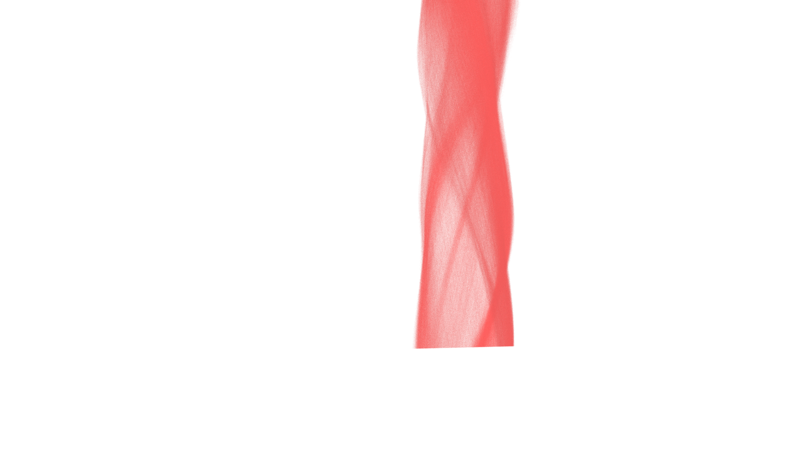
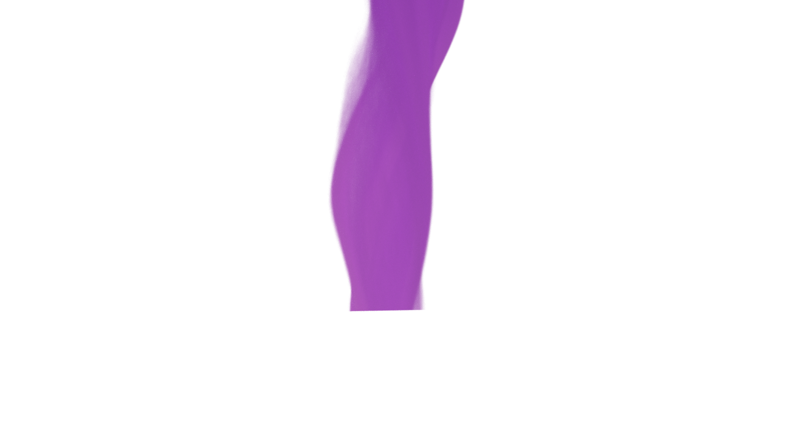
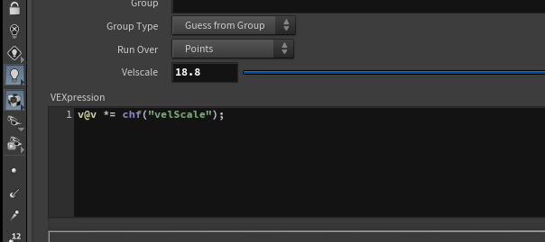

← 部落格 × Harbour × ETC


第 7 周
团队成员
Yiqi Zheng（特效）
Riley Ho（特效）
Itim Kongsakulvatanasook（特效）
Sofia Mancias（合成）
2 月 23 日
Benji Hopkins（外观开发）
SCAD × HARBOR × ETC － 第 7 周
大家好，这是我 SCAD × Harbor × ETC 部落格的第七周！
以下是周二简报后导师们的回馈。
Kyle：
-
各镜头之间的粒子不一致
-
镜头 1 中印表机周围地面上的效果可以更亮
-
调整粒子的调色，让它们不要过曝，镜头 1 现在颜色都爆掉了
-
镜头 3 的光线变化很好，整个镜头都维持这样的灯光
-
镜头 4 不需要那些物件，先专注在前面的镜头
Beck：
-
避免打任何关键影格，试著用时间或 age 来区分 pscale
-
可以根据摄影机视锥设定 pscale，也许用 wrangle
-
镜头 3 的粒子颜色和画作不符，现在中间非常红
-
粒子消失的效果好像发生了两次，感觉很怪
待办事项：
-
调整粒子的路径与流动形状（加入 noise）
-
为镜头 1 降噪
-
避免过曝。
这是我们第 7 周的预视。
镜头 2 需要拉长时间，目前感觉太快。有些色彩流也显得太平，需要探索更多变化。
这周另一个重要进展是增加了模拟中的粒子数量，档案大小也因此大幅增加。依照 Fowler 教授的建议，我研究了在 OBJ 层输出 USD 并使用参照流程。输出 USD 档并参照后，场景效能大幅改善。
另外在镜头 2，我进一步研究粒子流的平滑度，但有些流看起来还是很平。

镜头 1 的部分，Itim 协助写了 VEX，让我们可以透过 age 和速度产生变化。


我也缩放了粒子的速度，以便控制模拟的速度、强度与整体动态。
因为我很希望粒子有更多变化，Riley 分享了这个 wrangle 给我。它会计算每个粒子与摄影机的距离，再结合一些随机变化来控制粒子的 pscale（大小）。这能让粒子在画面上维持较一致的大小，同时加入自然的大小变化，在场景中看起来更平衡、更自然。